Discernir
Aprender a reconocer qué está moviendo mi vida.
No todo lo que me atrae me hace bien.
No todo lo que me cuesta me aleja de Dios.
Discernir es aprender a reconocer la diferencia.
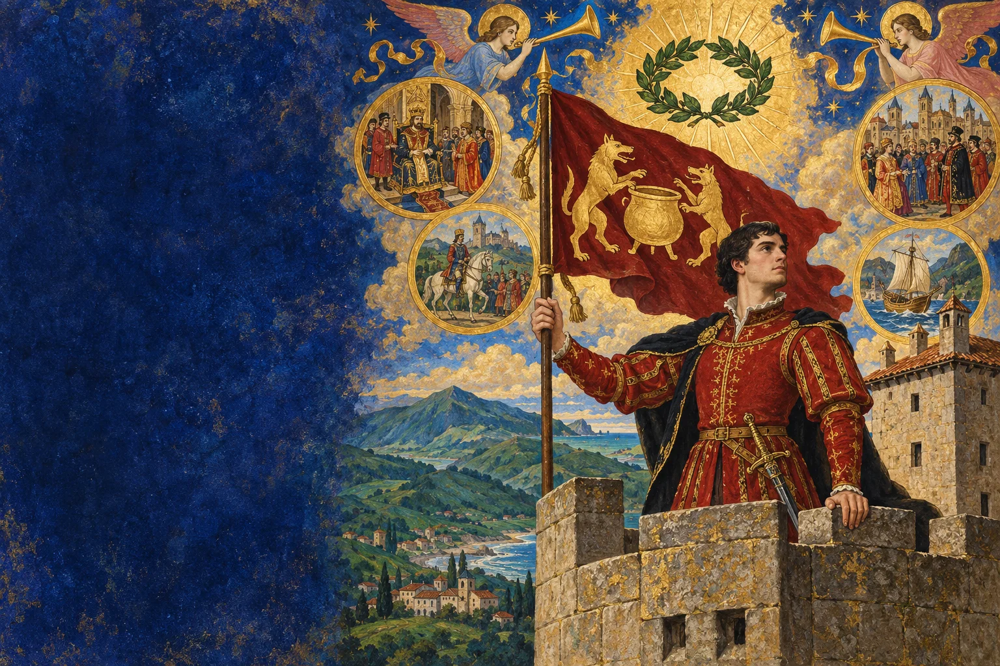
Íñigo
Pequeña nobleza vasca. Cortesano y caballero: quería destacar.
No le faltaban ideales. Tenía ideales muy fuertes.
¿Qué necesitaba conseguir para sentir que su vida valía?
Autobiografía, 1: «hombre dado a las vanidades del mundo… con un grande y vano deseo de ganar honra»
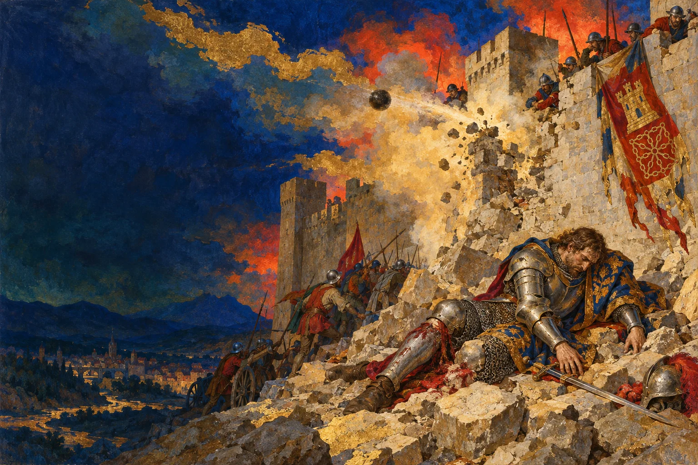
Se rompe el futuro
Un conflicto político y militar por Navarra: no una guerra de religión.
Otros querían rendirse. Él defendió resistir: la honra pesaba mucho.
Un proyectil le hiere las piernas. Los franceses vencen… pero atienden sus heridas.
Un hombre hecho para actuar queda inmovilizado.
¿Qué queda de mí cuando ya no puedo ser la persona que había planeado ser?
Sin decir que Dios le disparó: ¿cómo responder a Dios dentro de heridas que no elegí?
Autobiografía, 1
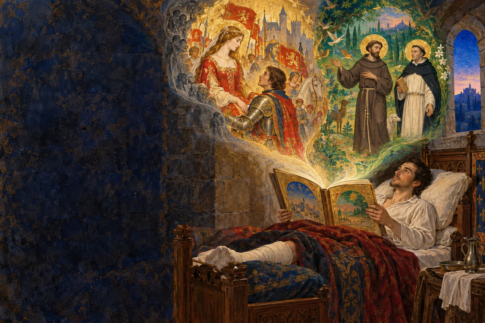
Dos entusiasmos
Sin libros de caballerías, lee una vida de Cristo y vidas de santos.
Los dos lo entusiasmaban mientras los imaginaba.
Y después…
Observa qué deja cuando pasa el entusiasmo.
Después de imaginar ese éxito: ¿me siento más disponible para servir, o más obsesionado con demostrar que valgo?
Autobiografía, 6–8 · Francisco, catequesis sobre el discernimiento 2 (7 sep 2022)
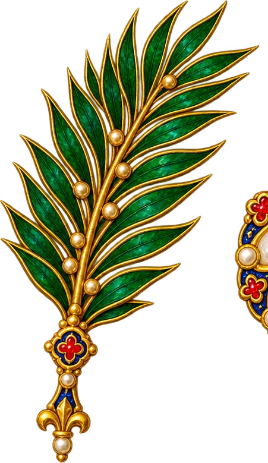
y a Domingo
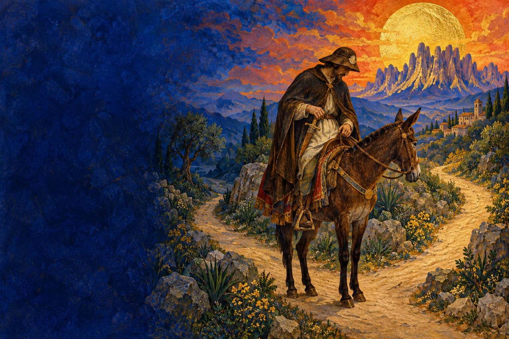
El camino de la mula
Confesión general, deja las armas, se hace peregrino.
Discute con un viajero musulmán sobre María y piensa en atacarlo.
No sabe qué hacer: deja que la mula decida. Ella no toma ese camino.
Sentir que defiendo algo sagrado no garantiza que mi impulso venga de Dios.
¿Puede mi orgullo ponerse una apariencia religiosa?
Autobiografía, 14–16
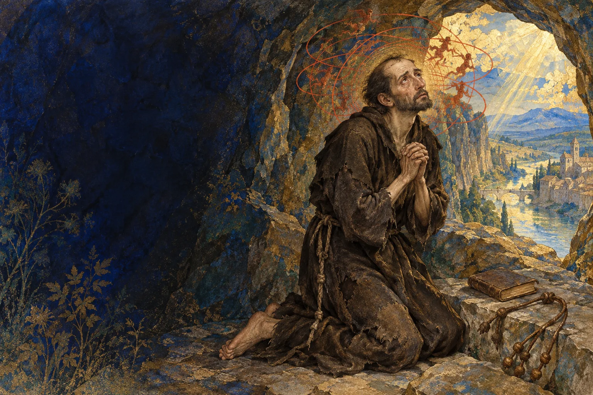
El rigor que no libera
Oración, misa, cuidado de enfermos.
Y penitencias tan duras que se descuidaba.
Escrúpulos: revisaba su pasado una y otra vez, sin encontrar descanso.
Autobiografía, 19–25
Cambió el ideal. ¿Cambió la necesidad de dominar y demostrar?
Le llegan pensamientos espirituales que le quitan el sueño. Decide dejarlos pasar y dormir.
Una idea religiosa no siempre es lo que toca atender ahora.
Autobiografía, 26
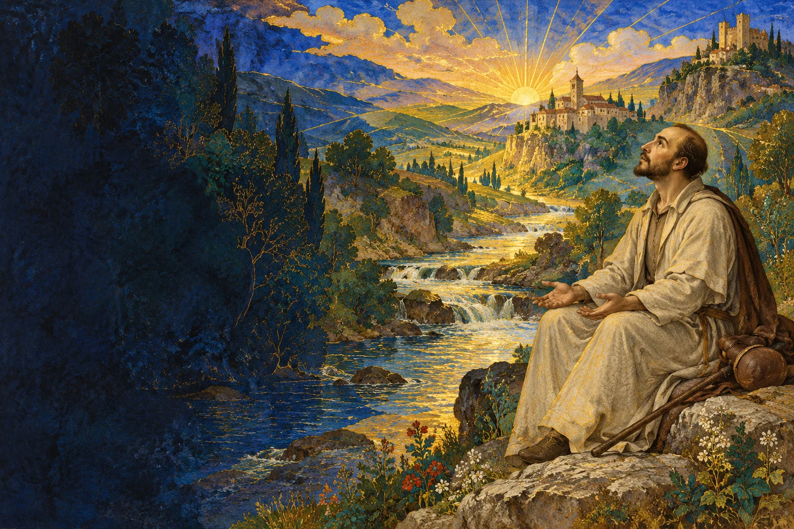
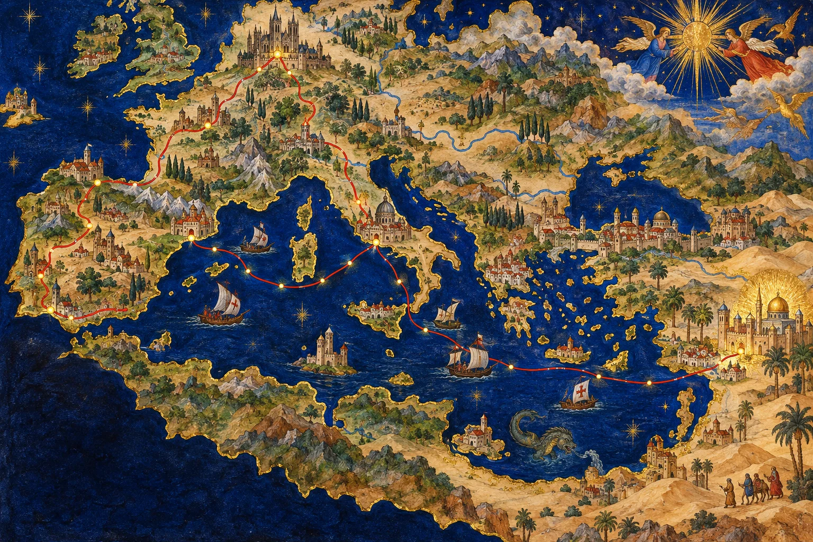
Una luz que no es control
Se le abren los ojos del entendimiento: ve su vida y la fe con una claridad nueva.
Luz para comprender, no control sobre lo que va a suceder.
Autobiografía, 30
Sin plano, con rumbo
«Si lo deseé sinceramente por Dios, tiene que salir como lo imaginé.»
1523: quiere quedarse en Jerusalén y servir… y tiene que volver a Europa.
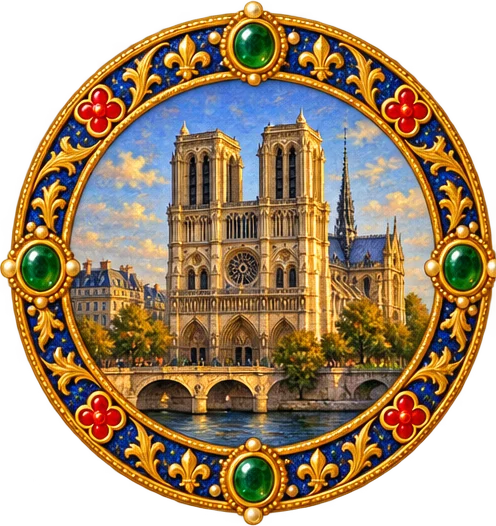
Jerusalén: quería quedarse
Barcelona · Alcalá · Salamanca
París: Fabro y Javier
Montmartre: los votos
Compañía de Jesús
No: «descubrió un plan y nunca dudó». Sí: aprendió a responder sin tener todo el recorrido resuelto.
Detalles de su vida interior: relato a Gonçalves da Câmara (1553–55), una mirada retrospectiva.
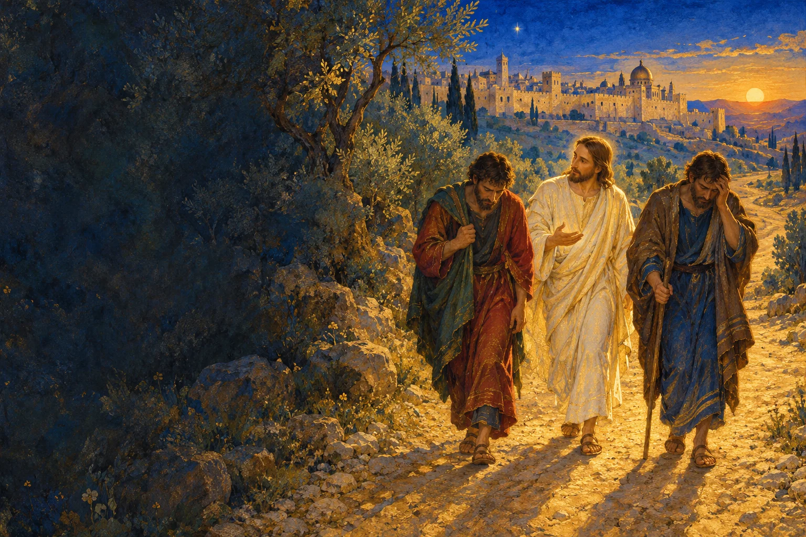
Emaús
«Nosotros esperábamos…»
Lc 24, 21
Dos discípulos se alejan de Jerusalén, tristes. Conocen los hechos, pero no saben comprenderlos.
Jesús camina con ellos, los escucha y les explica las Escrituras.
Antes de decidir: ¿cómo interpreto lo que vivo?
Lo que vivo… y lo que concluyo
¿Mis conclusiones describen toda la realidad… o sólo la realidad vista desde mi expectativa herida?
No se trata de negar lo que siento, sino de revisar lo que concluyo.
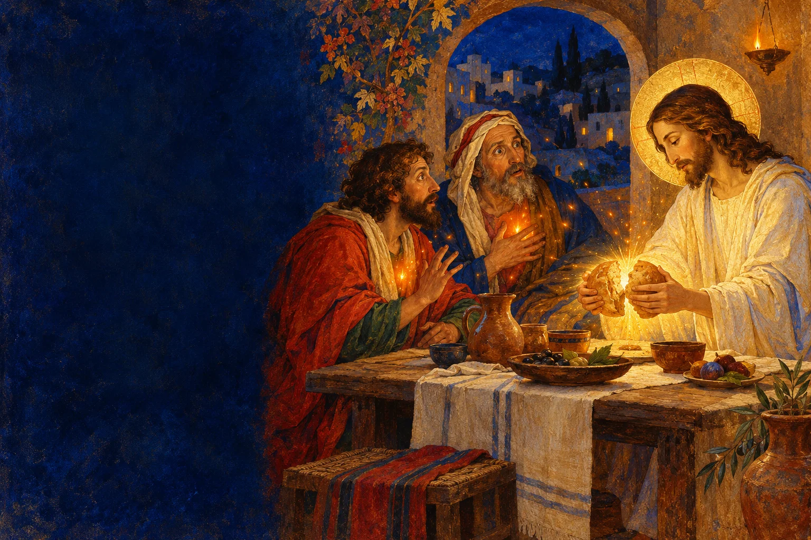
El ardor
«¿No ardía nuestro corazón mientras nos hablaba por el camino y nos explicaba las Escrituras?»
Lc 24, 32
El ardor no aparece solo:
No es «sentí algo intenso, por lo tanto era Dios».
La consolación no es sentirse bien
Consolación ignaciana
Lo que me orienta hacia Dios y fortalece la fe, la esperanza y el amor.
Puede traer alegría y paz… o también dolor por el propio pecado.
Reconocer que traté mal a alguien duele… y me abre a pedir perdón.
de amar y de vivir en la verdad?
Ejercicios, 316 · Francisco, catequesis 10 (30 nov 2022)
La desolación no es cualquier tristeza
Me tiende a apartar de la fe, la esperanza y el amor.
Pero no toda tristeza lo es: algunas despiertan la conciencia y muestran lo que debe cambiar.

La angustia no demuestra que una decisión sea contraria a Dios.
Jesús en Getsemaní · Mc 14, 32–36
La paz interior es algo que hay que discernir: no es un detector infalible de la voluntad de Dios.
Principio, desarrollo y final
«Quiero servir.»
«Necesito que todo se haga a mi manera.»
«Me irrito si otros destacan y justifico mi dureza: defiendo la misión.»
La actividad conserva una etiqueta buena. Discierno en qué se está convirtiendo mi manera de vivirla.
Ejercicios, 333 · sirve igual para el trabajo, la familia, el estudio o una causa.
Libertad interior
No significa que todo dé igual.
Es no quedar atado de antemano a un resultado, dentro de lo moralmente legítimo.
¿Puedo considerar sinceramente una respuesta distinta de la que deseo… o sólo busco argumentos religiosos para confirmar mi preferencia?
No es dejar de desear: es no convertir cada deseo en mandato de Dios.
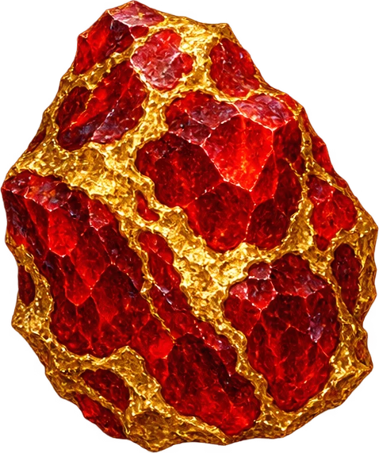
No tienes que esperar una señal extraordinaria
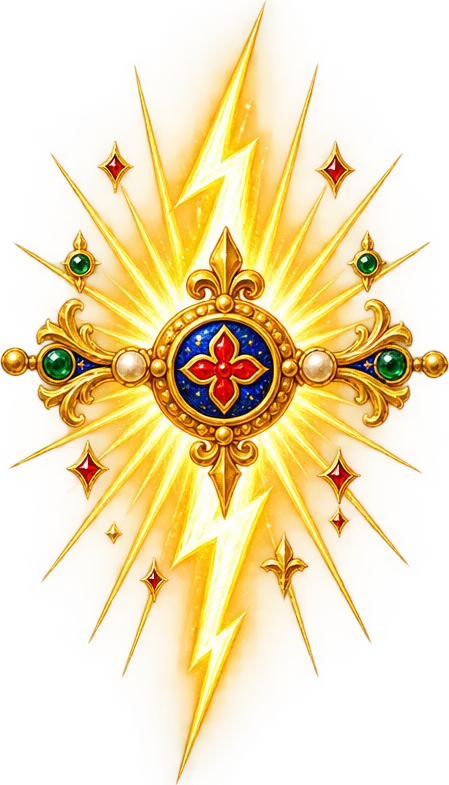
Claridad excepcional
Dios lo muestra de tal modo que no cabe duda.
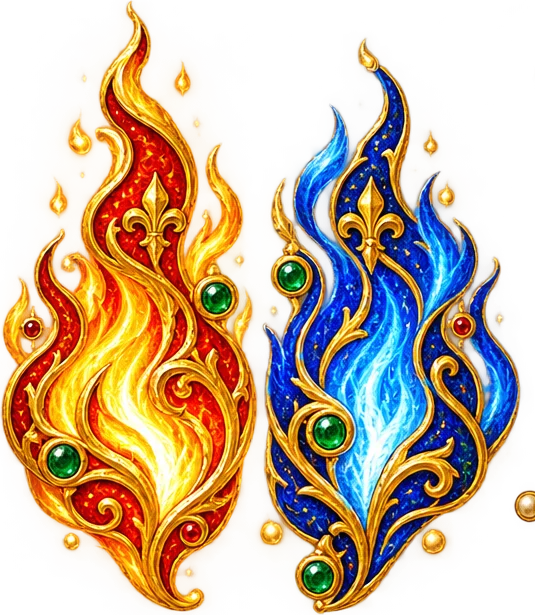
Examinar lo que se mueve
La claridad se forma al mirar consolaciones y desolaciones.
Un tiempo tranquilo
Razonar, comparar motivos y valorar alternativas.
La deliberación serena no es de segunda categoría por falta de fe.
Ejemplo, un trabajo: orar no sustituye averiguar qué exige el puesto, cuánto tiempo pedirá y qué consecuencias puede traer.
Ejercicios, 175–188
No cambies de rumbo en plena noche
No es para quedarse en una situación peligrosa o abusiva, ni para impedir una corrección necesaria ante hechos nuevos.
Ejercicios, 318
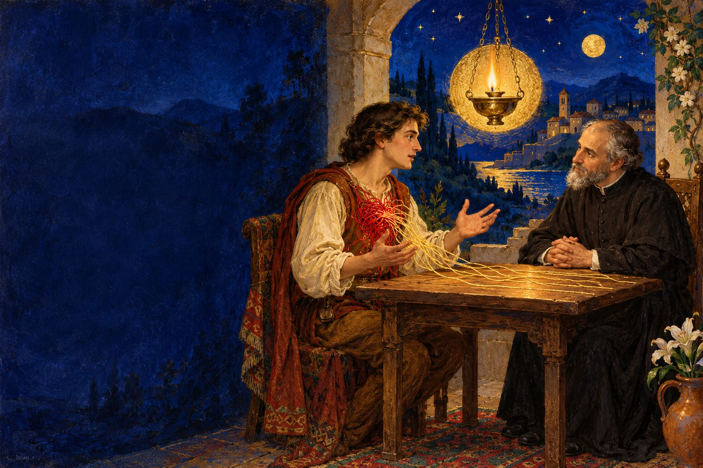
Acompañarse
«Mirarse al espejo con la ayuda de otro, eso ayuda mucho.»
¿Con quién puedo hablar sin ocultar los datos que contradicen lo que quiero escuchar?
Francisco, catequesis sobre el discernimiento 14
No sólo entre varios bienes
Discernir también es reconocer y rechazar lo malo.
«Engañar a alguien porque el dinero
financiará una obra buena.»
Una intención buena no justifica una conducta injusta.
Catecismo, 1753 y 1759
«Dios susurra» es una imagen
Invita al silencio. Pero no toda llamada se siente agradable.
El buen espíritu también puede incomodar la conciencia de quien hace daño.
No descartes una verdad sólo porque te confronta.
Equivocarse no es lo mismo que pecar
con un mal resultado
aprender y seguir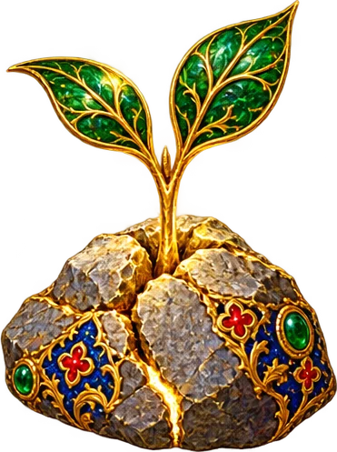
que necesita corrección
corregirque pide arrepentimiento
reparar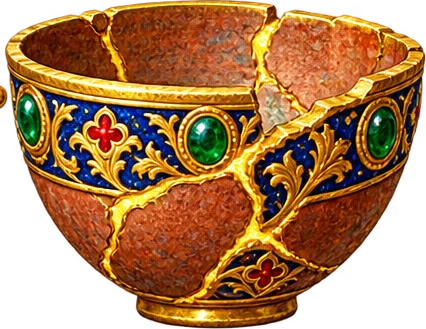
No necesitas garantizar que nunca te equivocarás para empezar a caminar. Sí estar dispuesto a escuchar, corregir y hacerte responsable.
Las consecuencias no desaparecen. La misericordia permite seguir respondiendo: aprender, reparar y volver a elegir.
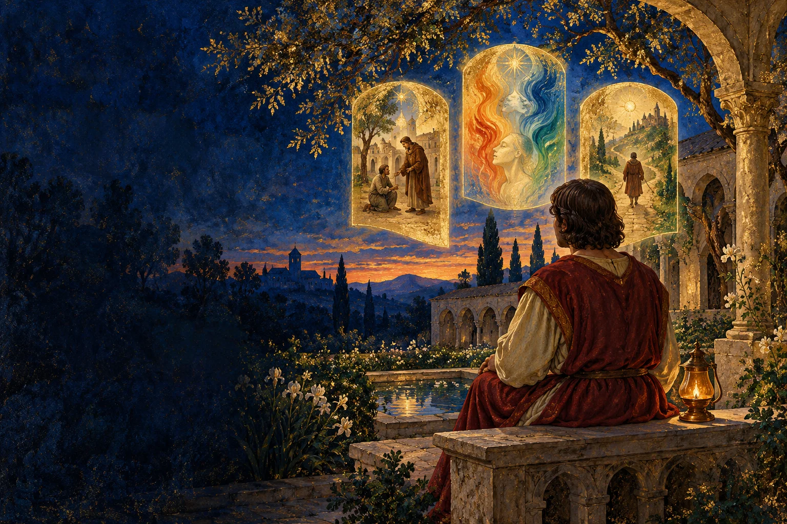
Un examen breve del día
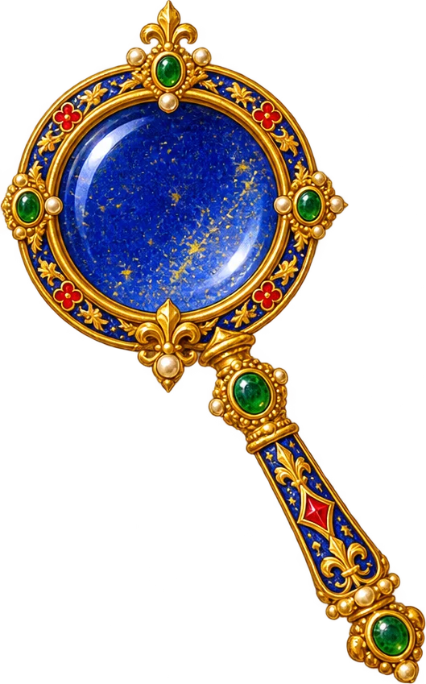
¿Qué pasó realmente? «No me contestó» es un hecho; «ya no le importo», una conclusión.
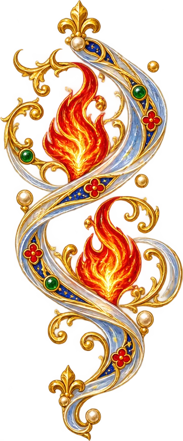
¿Qué despertó en mí, qué me dieron ganas de hacer? Comprender, huir, atacar, impresionar, ayudar, controlar…
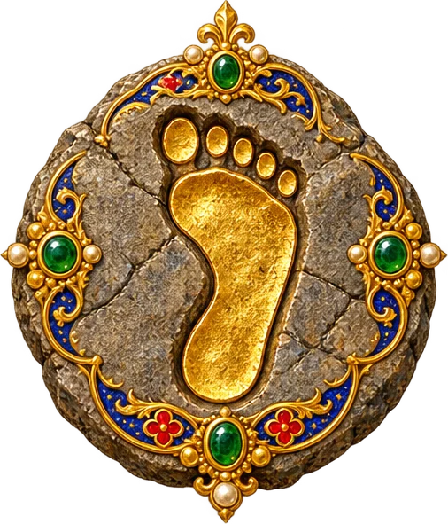
A la luz del Evangelio y de mis responsabilidades: un paso concreto. No toda mi vida.
Un paso más verdadero.
Adaptación sencilla; no es literal de los Ejercicios.
¿Qué cosa que parecía buena me terminó encerrando en mí mismo, y qué cosa difícil terminó haciéndome más capaz de amar?
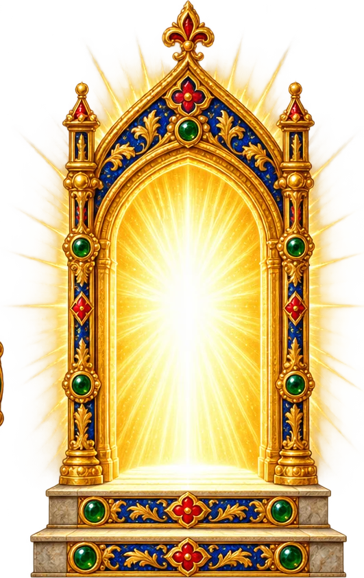
Un entusiasmo se conoce por lo que deja.
Una conclusión se revisa con la Palabra y con otros.
Discernir no es conseguir que Dios confirme mi plan.
Es aprender a responderle con libertad dentro de la vida real.
Síntesis nuestra, no cita de san Ignacio.
Señor, enséñame a reconocer lo que me mueve. Que no confunda mi miedo con tu voz, ni mi comodidad con tu paz. Dame luz para elegir, humildad para corregir y confianza para avanzar contigo.
Amén.